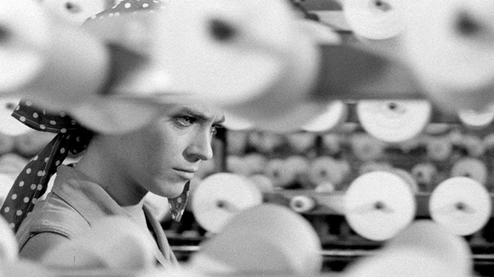

The Cinema of Márta Mészáros
FILM — FEB 06, 2022

The coolest.
La tqm.
Viva Meszaros.
Something like a blog
INTRODUCTION — DEC 13, 2021
As I write these words the idea of writing a blog starts materializing, always with the disclaimer ‘might delete later’. This time Ellen and Ben convinced me to do it. Well, Ellen doesn't know that she did, but I have been largely inspired by her blog. My writings probably won't be like hers; I'm not a philosopher, nor a mama, and neither I can write the way she does. Ellen writings are so natural and personal; I can only hope to have a sense of her warm and honesty.
Here I want to write about science, departing from the rigid and often uninteresting ways of academic writing. That on itself is a difficult task. I've learned English mainly from academic texts and my style reflects that fact. I guess I anyway have to give it a try. Over the past year I've become a more proficient academic reader, keeping my eyes and brain busy while my hands rest, perhaps sometimes doing the effort of writing a small note. I believe it is now time for my hands to do something too. I want to write about my research ideas, my questions, and the articles I find interesting, not because I have many ideas or because the ones I have make any sense (most of them surely don't), but it seems like an useful way of keeping track and giving me the time to develop them more deeply.
Inevitably, I'll write about film too. Those who know me are aware I'm always watching films and I’m often talking about them. Films have always been an important part of my life and nowadays I have immersed myself on them with certain seriousness. There’s a beauty in films which I cannot find elsewhere, and I wish to understand where my feelings are coming from. In Alice in the Cities, Rüdiger Vogler character notes “Talking to yourself, that’s actually more like listening than speaking” — I guess that’s the whole point of this something like a blog.